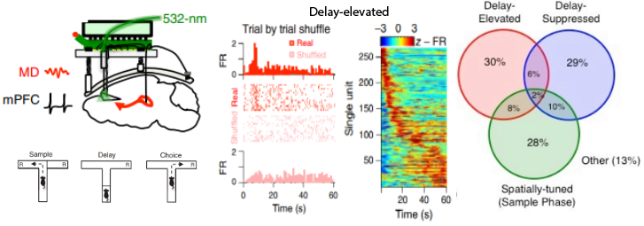

|
Research
I am interested in the neural mechanisms supporting working memory guided decision-making. My work has sought to leverage
molecular-genetic tools to anatomically map and precisely control neuronal circuits and multi-region neurophysiological recordings
to probe neuronal dynamics while mice perform sophisticated behavioral tasks that are amenable to quantitative study using advanced
machine learning approaches.
|
|
Selected Publications
|
|
|
Opponent control of behavior by dorsomedial striatal pathways depends on task demands and internal state
Scott S. Bolkan, Iris R. Stone, ... , Jonathan W. Pillow, Ilana B. Witten
Nature Neuroscience (2022)
PDF
Using a suite of virtual reality behavioral tasks and a novel latent state modeling approach we show that
opposing control of behavior by the two pathways of the striatum depends on both across-task cognitive demands
and within-task changes in internal state.
|
|

|
Thalamic projections sustain prefrontal activity during working memory maintenance
Scott S. Bolkan, ... , Joshua A. Gordon, Christoph Kellendonk
Nature Neuroscience (2017)
PDF
We used an array of spatiotemporally limited optogenetic purterbations and multi-site single-unit and local field potential recordings in
mice performing a spatial working memory task. We found that activity in reciprocal projections between the prefrontal cortex (PFC) and
mediodorsal thalamus (MD) were necessary for the maintenance of memory during a delay period. PFC neurons exhibited transiently elevated activity
that tiled the delay period, which was diminished on incorrect trials, and disrupted by inhibition of the MD (but not ventral hippocampus).
|
|
|
Untangling autism
Scott S. Bolkan, Joshua A. Gordon
Nature (2016)
PDF
News & Views commentary on elegant work by Wells et al. Nature (2016). The study exemplifies
a powerful approach for generating a roadmap between genetic abnormalities with linkages to human disorders, how regional expression of such genes
in brain circuits can lead to subsets of the myriad symptoms associated with complex psychiatric or neurological disorders.
|
|
|
Using human brain imaging studies as a guide towards animal models of schizophrenia
Scott S. Bolkan, F. Carvalho-Poyraz, Christoph Kellendonk
Neuroscience (2016)
PDF
While animal models can exploit a variety of entry points toward the study of schizophrenia, here we describe an approach that
seeks to closely approximate functional alterations observed with brain imaging techniques in patients. By modeling these intermediate
pathophysiological alterations in animals, this approach offers an opportunity to (1) tightly link a single functional brain abnormality
with its behavioral consequences, and (2) to determine whether a single pathophysiology can causally produce alterations in other brain areas
that have been described in patients.
|
|
{kind=link}